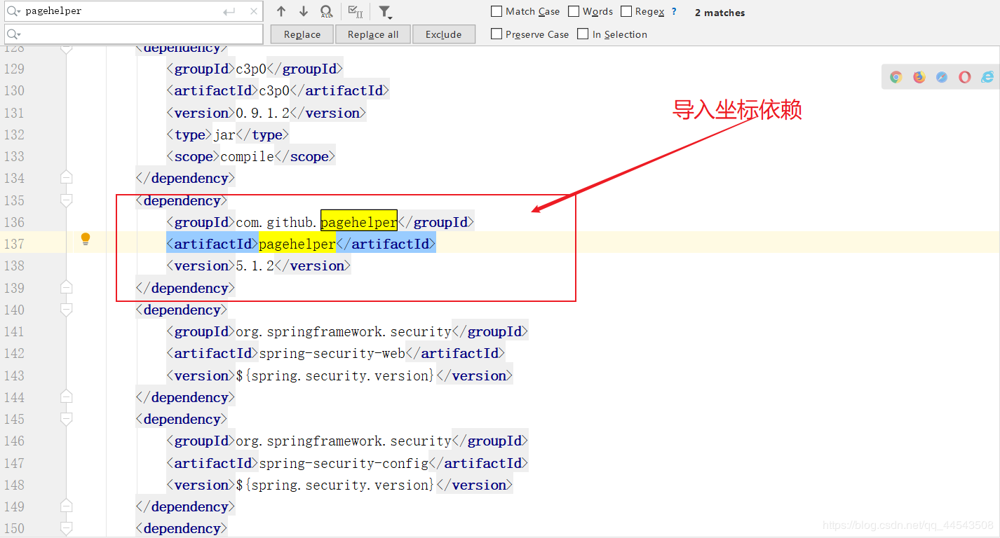
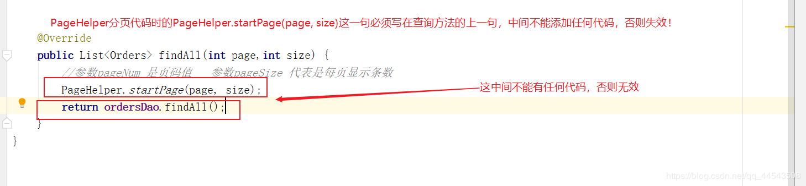
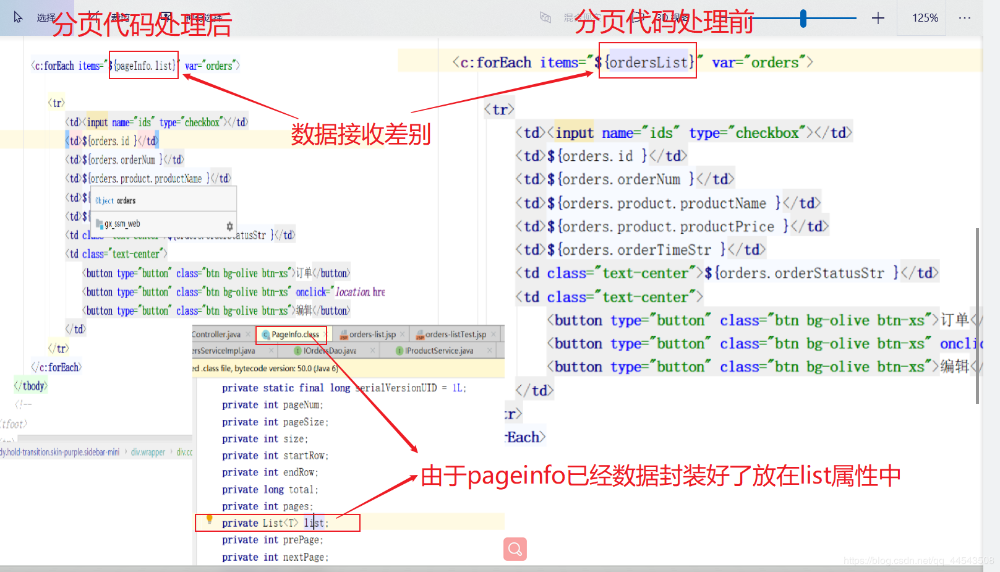
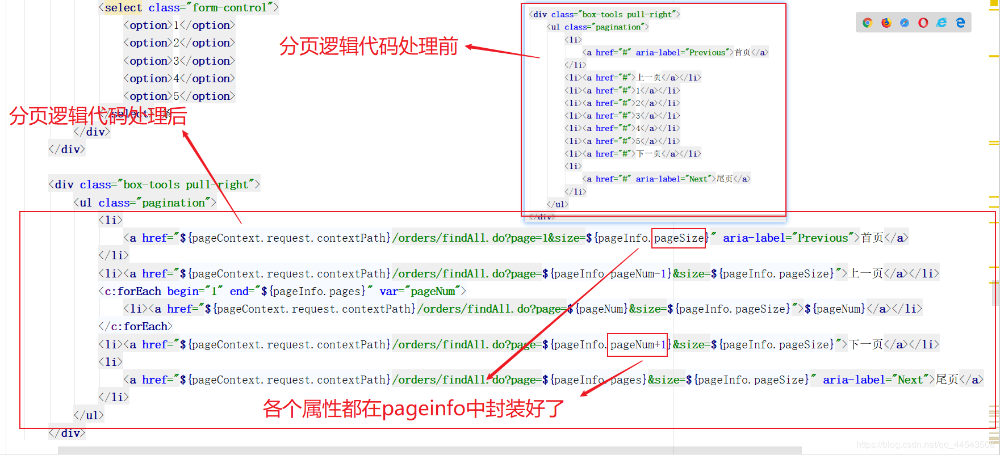

原文连接:https://www.cnblogs.com/yichunguo/p/11974596.html
目录
后端程序员都知道，在Web系统中，分页是一种常见的功能，我之前写的分页方法都比较麻烦，移植性也不高，这就很不乐观了。作为一个积极开朗的程序员，怎么能不去了解PageHelper分页插件呢？PageHelper是国内非常优秀的一款开源的mybatis分页插件，它支持基本主流与常用的数据库，一致支持mysql、oracle、mariaDB、DB2、SQLite、Hsqldb等。OK接下来就一起来了解了解PageHelper分页插件！
@
中文教程
首先，推荐两个PageHelper分页插件项目地址，这里面有中文教程：
github 项目
gitosc 项目
PageHelper使用
至于怎么使用我想上面提供的两个项目讲的绝逼讲的比我清楚，下面直接进入PageHelper使用实战
首先，集成引入分页插件有下面2种方式，一种是直接下jar包一种是mawen依赖，推荐使用 Maven 方式。
方法一： 直接下载jar包
jar包下载地址，由于使用了sql 解析工具，你还需要下载 jsqlparser.jar
方法二： Maven添加依赖
<dependency>
<groupId>com.github.pagehelper</groupId>
<artifactId>pagehelper</artifactId>
<version>5.1.2</version>
</dependency>1.导入maven依赖分页插件
我这里就采用方法二maven依赖

2.各个情况下xml的配置
情况一：如果是mybatis单独使用PageHelper分页插件的时候，就需要在xml配置中添加如下代码：
<!--
plugins在配置文件中的位置必须符合要求，否则会报错，顺序如下properties?, settings?,
typeAliases?, typeHandlers?, objectFactory?,objectWrapperFactory?, plugins?,
environments?, databaseIdProvider?, mappers?
-->
<!-- com.github.pagehelper为PageHelper类所在包名 -->
<plugins>
<!-- 使用下面的方式配置参数，推荐的两个项目中有所有的参数介绍 -->
<plugin interceptor="com.github.pagehelper.PageInterceptor">
<property name="param1" value="value1"/>
</plugin>
</plugins>情况二：显然，我是这个是ssm项目，mybatis是交由spring的IOC容器管理的，就需要在spring的xml配置中添加如下代码（创建工厂中添加）：
<!-- 把交给IOC管理 SqlSessionFactory -->
<bean id="sqlSessionFactory" class="org.mybatis.spring.SqlSessionFactoryBean">
<property name="dataSource" ref="dataSource"/>
<!-- 传入PageHelper的插件 -->
<property name="plugins">
<array>
<!-- 传入插件的对象 -->
<bean class="com.github.pagehelper.PageInterceptor">
<property name="properties">
<props>
<prop key="helperDialect">oracle</prop>
<prop key="reasonable">true</prop>
</props>
</property>
</bean>
</array>
</property>
</bean>下面用一个图来分析一下两个参数作用：

更多情况请参考上面推荐的项目~
3.Controller代码编写
上面我们配置完了，至于为什么从controller代码开始是因为controller调用service嘛，这样编写代码更方便快捷！为了看出差别，未分页的controller代码方法如下：
@Controller
@RequestMapping("/orders")
public class OrdersController {
@Autowired
private IOrdersService ordersService;
//查询所有orders未分页
@RequestMapping("/findAll.do")
public ModelAndView findAll() {
ModelAndView mv = new ModelAndView();
List<Orders> ordersList = ordersService.findAll();
mv.addObject("ordersList", ordersList);
mv.setViewName("orders-list");
return mv;
}
}而采用了分页代码则是如下：
//采用分页代码方法
@RequestMapping("/findAll.do")
public ModelAndView findAll(@RequestParam(name="page",required = true,defaultValue = "1")int page,@RequestParam(name="size",required = true,defaultValue = "4")int size ) {
ModelAndView mv = new ModelAndView();
List<Orders> ordersList = ordersService.findAll(page,size);
//PageInfo就是一个分页Bean
PageInfo pageInfo =new PageInfo(ordersList);
mv.addObject("pageInfo", pageInfo);
mv.setViewName("orders-list");
return mv;
}可以发现多了两个参数分别是page和size
4.Service接口代码编写
public interface IOrdersService {
List<Orders> findAll(int page,int size);
}5.Service实现类代码编写
在执行sql之前（ServiceImpl），使用PageHelper分页，参数pageNum 是页码值 参数pageSize 代表是每页显示条数。在ServiceImpl中,使用PageHelper分页操作代码如下：
@Service
public class OrdersServiceImpl implements IOrdersService {
@Autowired
private IOrdersDao ordersDao;
@Override
public List<Orders> findAll(int page,int size) {
//参数pageNum 是页码值 参数pageSize 代表是每页显示条数
PageHelper.startPage(page, size);
return ordersDao.findAll();
}
}特别注意：在编写PageHelper分页代码时的 PageHelper.startPage(page, size)这一句必须写在查询方法的上一句，中间不能添加任何代码，否则失效！

6.jsp页面未处理代码
没有更改的jsp页面代码,普通查询关键更改代码块，注意这里接收数据为 ordersList
<c:forEach items="${ordersList}" var="orders">
<tr>
<td><input name="ids" type="checkbox"></td>
...
<td>...</td>
</td>
</tr>
</c:forEach>这下面的代码则是未分页逻辑代码
<div class="box-tools pull-right">
<ul class="pagination">
<li>
<a href="#" aria-label="Previous">首页</a>
</li>
<li><a href="#">上一页</a></li>
<li><a href="#">1</a></li>
<li><a href="#">2</a></li>
<li><a href="#">3</a></li>
<li><a href="#">4</a></li>
<li><a href="#">5</a></li>
<li><a href="#">下一页</a></li>
<li>
<a href="#" aria-label="Next">尾页</a>
</li>
</ul>
</div>
</div>7.jsp页面处理后代码
更改后的jsp页面代码,分页查询的关键更改代码块，注意这里接收数据为 ordersList.list
<c:forEach items="${ordersList.list}" var="orders">
<tr>
<td><input name="ids" type="checkbox"></td>
...
<td>...</td>
</td>
</tr>
</c:forEach>这下面的代码则是分页逻辑代码
<div class="box-tools pull-right">
<ul class="pagination">
<li>
<a href="${pageContext.request.contextPath}/orders/findAll.do?page=1&size=${pageInfo.pageSize}" aria-label="Previous">首页</a>
</li>
<li><a href="${pageContext.request.contextPath}/orders/findAll.do?page=${pageInfo.pageNum-1}&size=${pageInfo.pageSize}">上一页</a></li>
<c:forEach begin="1" end="${pageInfo.pages}" var="pageNum">
<li><a href="${pageContext.request.contextPath}/orders/findAll.do?page=${pageNum}&size=${pageInfo.pageSize}">${pageNum}</a></li>
</c:forEach>
<li><a href="${pageContext.request.contextPath}/orders/findAll.do?page=${pageInfo.pageNum+1}&size=${pageInfo.pageSize}">下一页</a></li>
<li>
<a href="${pageContext.request.contextPath}/orders/findAll.do?page=${pageInfo.pages}&size=${pageInfo.pageSize}" aria-label="Next">尾页</a>
</li>
</ul>
</div>
</div>8.jsp页面处理前后代码分析


//PageInfo就是一个分页Bean
PageInfo pageInfo =new PageInfo(ordersList);为了能看到上面的pageInfo源代码，我就把代码贴在下面了
package com.github.pagehelper;
import java.io.Serializable;
import java.util.Collection;
import java.util.List;
public class PageInfo<T> implements Serializable {
private static final long serialVersionUID = 1L;
private int pageNum;
private int pageSize;
private int size;
private int startRow;
private int endRow;
private long total;
private int pages;
private List<T> list;
private int prePage;
private int nextPage;
private boolean isFirstPage;
private boolean isLastPage;
private boolean hasPreviousPage;
private boolean hasNextPage;
private int navigatePages;
private int[] navigatepageNums;
private int navigateFirstPage;
private int navigateLastPage;
public PageInfo() {
this.isFirstPage = false;
this.isLastPage = false;
this.hasPreviousPage = false;
this.hasNextPage = false;
}
public PageInfo(List<T> list) {
this(list, 8);
}
public PageInfo(List<T> list, int navigatePages) {
this.isFirstPage = false;
this.isLastPage = false;
this.hasPreviousPage = false;
this.hasNextPage = false;
if (list instanceof Page) {
Page page = (Page)list;
this.pageNum = page.getPageNum();
this.pageSize = page.getPageSize();
this.pages = page.getPages();
this.list = page;
this.size = page.size();
this.total = page.getTotal();
if (this.size == 0) {
this.startRow = 0;
this.endRow = 0;
} else {
this.startRow = page.getStartRow() + 1;
this.endRow = this.startRow - 1 + this.size;
}
} else if (list instanceof Collection) {
this.pageNum = 1;
this.pageSize = list.size();
this.pages = this.pageSize > 0 ? 1 : 0;
this.list = list;
this.size = list.size();
this.total = (long)list.size();
this.startRow = 0;
this.endRow = list.size() > 0 ? list.size() - 1 : 0;
}
if (list instanceof Collection) {
this.navigatePages = navigatePages;
this.calcNavigatepageNums();
this.calcPage();
this.judgePageBoudary();
}
}
private void calcNavigatepageNums() {
int i;
if (this.pages <= this.navigatePages) {
this.navigatepageNums = new int[this.pages];
for(i = 0; i < this.pages; ++i) {
this.navigatepageNums[i] = i + 1;
}
} else {
this.navigatepageNums = new int[this.navigatePages];
i = this.pageNum - this.navigatePages / 2;
int endNum = this.pageNum + this.navigatePages / 2;
int i;
if (i < 1) {
i = 1;
for(i = 0; i < this.navigatePages; ++i) {
this.navigatepageNums[i] = i++;
}
} else if (endNum > this.pages) {
endNum = this.pages;
for(i = this.navigatePages - 1; i >= 0; --i) {
this.navigatepageNums[i] = endNum--;
}
} else {
for(i = 0; i < this.navigatePages; ++i) {
this.navigatepageNums[i] = i++;
}
}
}
}
private void calcPage() {
if (this.navigatepageNums != null && this.navigatepageNums.length > 0) {
this.navigateFirstPage = this.navigatepageNums[0];
this.navigateLastPage = this.navigatepageNums[this.navigatepageNums.length - 1];
if (this.pageNum > 1) {
this.prePage = this.pageNum - 1;
}
if (this.pageNum < this.pages) {
this.nextPage = this.pageNum + 1;
}
}
}
private void judgePageBoudary() {
this.isFirstPage = this.pageNum == 1;
this.isLastPage = this.pageNum == this.pages || this.pages == 0;
this.hasPreviousPage = this.pageNum > 1;
this.hasNextPage = this.pageNum < this.pages;
}
public int getPageNum() {
return this.pageNum;
}
public void setPageNum(int pageNum) {
this.pageNum = pageNum;
}
public int getPageSize() {
return this.pageSize;
}
public void setPageSize(int pageSize) {
this.pageSize = pageSize;
}
public int getSize() {
return this.size;
}
public void setSize(int size) {
this.size = size;
}
public int getStartRow() {
return this.startRow;
}
public void setStartRow(int startRow) {
this.startRow = startRow;
}
public int getEndRow() {
return this.endRow;
}
public void setEndRow(int endRow) {
this.endRow = endRow;
}
public long getTotal() {
return this.total;
}
public void setTotal(long total) {
this.total = total;
}
public int getPages() {
return this.pages;
}
public void setPages(int pages) {
this.pages = pages;
}
public List<T> getList() {
return this.list;
}
public void setList(List<T> list) {
this.list = list;
}
/** @deprecated */
@Deprecated
public int getFirstPage() {
return this.navigateFirstPage;
}
/** @deprecated */
@Deprecated
public void setFirstPage(int firstPage) {
this.navigateFirstPage = firstPage;
}
public int getPrePage() {
return this.prePage;
}
public void setPrePage(int prePage) {
this.prePage = prePage;
}
public int getNextPage() {
return this.nextPage;
}
public void setNextPage(int nextPage) {
this.nextPage = nextPage;
}
/** @deprecated */
@Deprecated
public int getLastPage() {
return this.navigateLastPage;
}
/** @deprecated */
@Deprecated
public void setLastPage(int lastPage) {
this.navigateLastPage = lastPage;
}
public boolean isIsFirstPage() {
return this.isFirstPage;
}
public void setIsFirstPage(boolean isFirstPage) {
this.isFirstPage = isFirstPage;
}
public boolean isIsLastPage() {
return this.isLastPage;
}
public void setIsLastPage(boolean isLastPage) {
this.isLastPage = isLastPage;
}
public boolean isHasPreviousPage() {
return this.hasPreviousPage;
}
public void setHasPreviousPage(boolean hasPreviousPage) {
this.hasPreviousPage = hasPreviousPage;
}
public boolean isHasNextPage() {
return this.hasNextPage;
}
public void setHasNextPage(boolean hasNextPage) {
this.hasNextPage = hasNextPage;
}
public int getNavigatePages() {
return this.navigatePages;
}
public void setNavigatePages(int navigatePages) {
this.navigatePages = navigatePages;
}
public int[] getNavigatepageNums() {
return this.navigatepageNums;
}
public void setNavigatepageNums(int[] navigatepageNums) {
this.navigatepageNums = navigatepageNums;
}
public int getNavigateFirstPage() {
return this.navigateFirstPage;
}
public int getNavigateLastPage() {
return this.navigateLastPage;
}
public void setNavigateFirstPage(int navigateFirstPage) {
this.navigateFirstPage = navigateFirstPage;
}
public void setNavigateLastPage(int navigateLastPage) {
this.navigateLastPage = navigateLastPage;
}
public String toString() {
StringBuffer sb = new StringBuffer("PageInfo{");
sb.append("pageNum=").append(this.pageNum);
sb.append(", pageSize=").append(this.pageSize);
sb.append(", size=").append(this.size);
sb.append(", startRow=").append(this.startRow);
sb.append(", endRow=").append(this.endRow);
sb.append(", total=").append(this.total);
sb.append(", pages=").append(this.pages);
sb.append(", list=").append(this.list);
sb.append(", prePage=").append(this.prePage);
sb.append(", nextPage=").append(this.nextPage);
sb.append(", isFirstPage=").append(this.isFirstPage);
sb.append(", isLastPage=").append(this.isLastPage);
sb.append(", hasPreviousPage=").append(this.hasPreviousPage);
sb.append(", hasNextPage=").append(this.hasNextPage);
sb.append(", navigatePages=").append(this.navigatePages);
sb.append(", navigateFirstPage=").append(this.navigateFirstPage);
sb.append(", navigateLastPage=").append(this.navigateLastPage);
sb.append(", navigatepageNums=");
if (this.navigatepageNums == null) {
sb.append("null");
} else {
sb.append('[');
for(int i = 0; i < this.navigatepageNums.length; ++i) {
sb.append(i == 0 ? "" : ", ").append(this.navigatepageNums[i]);
}
sb.append(']');
}
sb.append('}');
return sb.toString();
}
}
到这里，基本就OK了，我再次强调我推荐的那两个项目，那里面讲的很详细大佬写的，强调完毕，挥爪~